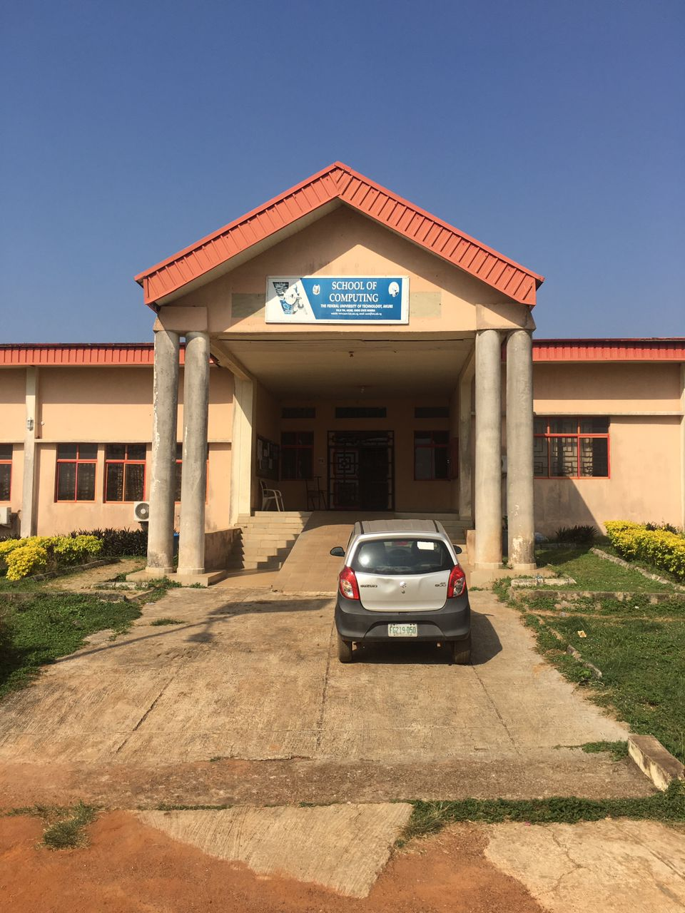
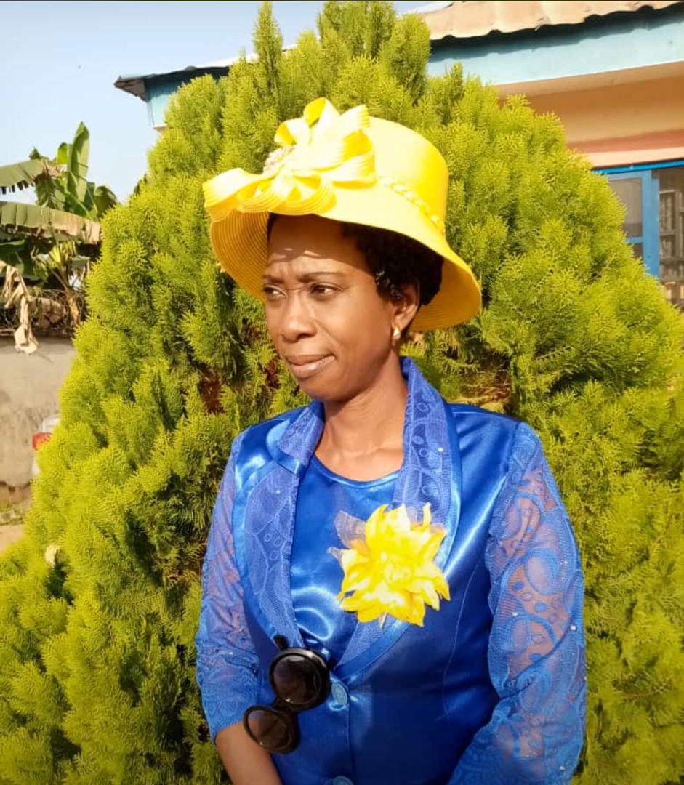

INFORMATION AND TECHNOLOGY

.
HOD [INFORMATION TECHNOLOGY]

POST: ACTING HOD OF IFT
NAME: PROF (MRS)O.K BOYINBODE
EMAIL ADDRES: aderonke7@gmail.com
TELEPHONE: 09056432118
PROF (MRS)O.K BOYINBODE is a Lecturer in the Department of INFORMATION TECHNOLOGY University of Technology, Akure (FUTA). She is a member of the Board of Nigerian
Techsters Women Initiative with Tech4Dev on a Microsoft sponsored Programme for Nigerian Women. As a passionate students Club supporter, she is a staff adviser to Students’ Campus Tech groups such as ACM student Chapter, Google Students’ Club.
Dr. Thompson has mentored so many students who are in their fields of choice. She has attended many international conferences and presented papers local and International communities.
Dr (Mrs) O.K. Boyinbode is an Associate Professor and the Ag. HOD of the Department of Information Technology. She had her first degree in Computer Science
from Federal University of Technology Akure, Masters degree (Computer Science) from University of Lagos and Ph.D (Computer Science) from University of Cape Town,
South Africa. She has travelled all over the world winning several awards and she has published several articles in high ranking journals.
COURSE SYNOPSES
CYS 102 – Introduction to Computer and Network Security (2 Units)
This course provides an introduction to computer and data network security. Students will examine the rationale and necessity for securing computer systems and data networks, as well as
methodologies for implementing security, security policies, best current practices, testing security, and incident response
CYS 104 – Principle and Practice of Information Security (3 Units)
Operating system protection mechanisms, intrusion detection systems, formal models of security, cryptography, Steganography, network and distributed system security, denial of service (and other) attack strategies, worms, viruses, transfer of funds/value across networks, electronic voting, secure applications, homeland cybersecurity policy, and government regulation of
information technology.
CYS 106 – Ethical Issues in Information Technology (2 Units)
A comprehensive study of ethics and of personal and organizational ethical decision making in the use of information systems in a global environment. The aim is to identify ethical issues raised by existing and emerging technologies, apply a structured framework to analyze risk and decision alternatives, and understand the impact of personal ethics and organizational values on an ethical workplace.
BIO 101 - General Biology I (3 Units)
The scope of biology and its place in human welfare including characteristics of life, concepts in biology, topical issues in biology and career opportunities. Diversity and classification of living things. Cell structure and organisation; functions of cellular organelles, diversity, general reproduction, interrelationship of organisms, heredity and evolution; elements of ecology and types of habitat. Differences between plants and animals. Variation and life cycles of plants to include non-vascular plants like algae, fungi, bacteria, viruses, bryophytes. Varieties and forms life cycles and functions of flowering plants.
BIO 102 General Biology II (3 Units)
A generalised survey of the Animal Kingdom based mainly on study of similarities and differences in external features; ecological adaptations of these forms, Structural, functional and evolutionary study of protozoans, COELENTRATES, Platyhelminthes, Nematodes, Annelids, Arthropods, Echinoderms and Molluscs. Evolutionary sequence in the form and functions of Protochordates and various classes of vertebrates. Introduction to ecology to include simple ecological facts in terrestrial and aquatic habitat and the relationships between an organism and its environment.
BIO 103 General Biology 1 Practical (1 Unit)
Introduction to Biology practical use of the microscope, cells structure, stanning starch in plant tissue, algae, fungi, bryophytamosses and liverwort, gymnosperms angiosperm
BIO 104 Genera L Biology Practical II (1 Unit) Protozoans and coelenterates, worms and molluscs, arthropods, protochordates and fishes, amphibians, reptiles, birds, mammals.
CSC 101 – Introduction to Computer Science(2 units)
History of computers; functional components of a computer; characteristics of a computer system. Introduction to concepts of programming logic, principles and techniques. Study and use of the Microsoft office productivity suite with an emphasis on database design and development. Introduction to VBA programming languages and development of customized solutions for business and personal needs.
CSC 102 – Introduction to Computing (3 units)
Prerequisite – CSC101 Broad introduction to programming methodology and algorithm. Emphasis is on problem solving strategies and techniques for developing/documenting applications, including principles of structured programming, problem decomposition, program organisation, the use of procedural abstraction and basic debugging skills. Visual BASIC programming language serves as the vehicle to illustrate the many concepts. Introduction to programming VB .NET – Introduction, the VB .NET language, the .NET framework, developing desktop applications, controls, common dialogue boxes and menus, developing browser-based applications, web services, ADO .NET – developing database applications.
CHE 101 General Chemistry I (3 Units)
Atoms, atomic structures, atomic theory, aufbau method, Hund’s rule, Pauli Exclusion principles, atomic spectra, molecules and chemical reaction, energetic, chemical equation and stoichiometry, atomic structure and modern electronic theory of atoms, radioactivity, chemical kinetics, collision theory of gases, solution, solubility and solubility product, electro chemistry, electrode potential, half-cell equation.
CHE 102 – General Chemistry Ii (3 Units)
Historical survey of the development and importance organic chemistry, nomenclature and classes of organic and purification of organic compounds; qualification of organic compounds; qualitative and quantitative organic chemistry; stereo chemistry; determination of structure of organic compounds, Electronic theory in organic chemistry: saturated hydrocarbons; alkenes. Unsaturated hydrocarbons; alkenes, alkynes and aromatics. Functional group: carbonyls, halides, carboxylic acids and hydroxyl. Periodic table and periodic properties; periodic law, Moseley’s law, valence forces; structure of solids; molecular and ionic forces. The chemistry of selected metals and non-metals Quantitative analysis.
CHE 103 – Experimental Chemistry I (1 Unit)
Introduction to basic laboratory procedure and apparatus in the chemistry laboratory. Recording of laboratory data. Calibration of basic laboratory equipment. Preparation and standardization of common reagent. Preparation of sulphide of metals and determination of their empirical formula. Determination of atomic weight of metals. Stoichiometry. Preparation of simple, double and complex salt
CHE 104- Experimental Chemistry Ii (1 Unit)
Identification of elements in organic compounds. Separation of mixtures. Purification and determination of melting points of organic compounds .test of functional groups in organic compounds. Ignition test. Qualitative inorganic analysis. Estimation of iron in ferrous ammonium sulphate using standardized potassium permanganate. Determination of copper in copper (II) salts.
GNS 101: Use of English I:(2 Units)
Effective communication and writing in English Language skills, essay writing skills (organization and logical presentation of ideas, grammar and style), comprehension, sentence construction, outlines and paragraphs.
GNS 102: Use of English II (2 Units)
Logical presentation of papers; Phonetics; Instruction on lexis; Art of public speaking and oral communication; Figures of speech; Précis; Report writing.
GNS 103: Information Literacy (2 Units)
Brief history of libraries; Library and education; University libraries and other types of libraries; Study skills (reference services); Types of library materials, using library resources including e-learning, e-materials, etc.; Understanding library catalogues (card, OPAC, etc.) and classification; Copyright and its implications; Database resources; Bibliographic citations and referencing. Development of modern ICT; Hardware technology; Software technology; Input devices; Storage devices; Output devices; Communication and internet services; Word processing skills (typing, etc.).
GNS 106: Logic, and Philosophy (2 Units)
A brief survey of the main branches of Philosophy; Symbolic logic; Special symbols in symbolic logic-conjunction, negation, affirmation, disjunction, equivalent and conditional statements, law of tort. The method of deduction using rules of inference and bi- conditionals, qualification theory. Types of discourse, nature or arguments, validity and soundness, techniques for evaluating arguments, distinction between inductive and deductive inferences; etc. (Illustrations will be taken from familiar texts, including literature materials, novels, law reports and newspaper publications).
PHY 101 – General Physics I (3 Units)
Space and Time, frames of reference, invariance of physical laws, relativity of time intervals, relativity of length, UNITS and dimension, standards and UNITS, unit consistency and conversions. Kinematics vectors and vector addition, components of vectors, unit vectors, products of vectors. Displacement, Time and average velocity, instantaneous velocity, average acceleration, motion with constant acceleration, freely falling bodies, position and velocity vectors, acceleration vector, projectile motion. Motion in a circle and relative velocity. Fundamental laws of mechanics: forces and interactions, Newton’s laws, dynamics of particles, frictional forces, dynamics of circular motion. Galilean invariance. Universal gravitation, gravitational potential energy, elastic potential energy, conservative and non-conservative forces. Work and energy, kinetic energy and the work-energy theorem, power, momentum and impulse, conservation, elastic collisions, centre of mass. Rotational dynamics and angular momentum angular velocity and acceleration, energy in rotational motion, parallel axis theorem, torque and rotation about a moving axis, simple harmonic motion and its applications. The simple pendulum, damped oscillation, forced oscillation and resonance.
PHY 102 - General Physics II (3 Units)
Electrostatics: Conservation Law of electric charges, electrons and electrostatics, Coulomb’s law, electric field and forces, electric field line, electric dipoles charged particles in an electric field, charge and electric flux, Gauss’s law and its applications, electric potential, electric potential due to a single charge, electric potential due to continuous charge distribution equipotent ail surfaces. Conductors and currents: electric field energy, Gauss’s law in dielectrics. Magnetism: Magnetic field, magnetic field lines and magnetic flux, motion of a charged particles in a magnetic filled, magnetic force on a current carry conductor, Ampere’s law, Biot-Savart law, electromagnetic induction, inductance, self-inductance, mutual inductance, Maxwell’s equation, electromagnetic waves and Oscillations.
PHY 103 - General Physics III (2 Units)
Molecular treatment of properties of matter, elasticity; Hooke’s Law. Young’s shear and bulk moduli. Hydrostatics; pressure; buoyancy. Archimedes Principles. Hydrodynamics; Streamlines Bernoulli and continuity equations. Turbulence, Reynolds’s number. Viscosity; laminar flow, Poiseuille’s equation. Surface tension; adhesion, cohesion, capillarity, drops and bubbies. Temperature; the zeroth law of thermodynamics; heat; gas laws of thermodynamics; kinetic theory of gases. Application.
PHY 107 General Physics Laboratory I (1 Unit)
The experiments include: Mechanism: timing experiments, simple pendulum, compound pendulum measurement of moments, determination of moments of inertia, measurement of viscosity, use of force board, law of momentum. Optics: reflection using plane mirror, convex/concave mirror, concave/convex lens, refraction using a prism critical angle, apparent depth/real depth, simple microscope, compound microscope. Electricity: Ohm’s law, heating effect of a current internal resistance of a cell, metre/Wheatstone bridge, potentiometer measurement of ace, plotting of magnetic field. Heat: measurement of ace, plotting of magnetic field. Heat: measurement of specific capacity of water, and a solid, expansion of gas experiment using a long capillary tube, joule’s law. Sound: resonance tube, sonometer.
PHY 108: General Physics Laboratory II (1 Unit)
The course comprises of experiments drawn from core subjects of fundamental relevance to the understanding of basic sciences. Electricity: Ohm’s law, heating effect of a current, internal resistance of a cell, meter/Wheatstone bridge, potentiometer measurement of electrochemical equivalent (ece), plotting of magnetic field. Heat: measurement of specific heat capacity of liquid and solid, expansion of gas experiment using a long capillary tube, Boyle’s and Charles’s law. Sound: resonance tube, sonometer.
MTS 101 - Introductory Mathematics I (3 Units)
Elementary set theory, subsets, union, intersections, complement, Venn diagrams. Real numbers; integers, rational and irrational numbers, mathematical induction, real sequences and series, theory of quadratic equations, binominal theorem, nth roots of unity. Circular measure, trigonometric functions of angels of any magnitude, addition and factor formulae.
MTS 102 - Introductory Mathematics II (3 Units)
Function of a real variable, graphs, limits and idea of continuity. The derivative as limit of rate of change, Techniques of differentiation. Extreme Curve Sketching. Integration as an inverse of Differentiation. Extreme curve sketching, integration as an inverse of differentiation. Methods of integration, Definite integral. Applications area, volumes areas, etc.
MEE 101: Engineering Drawing I (3 Units)
Instruments for engineering drawing and their uses. Drawing paper sizes, margins and title blocks. Lettering and types of line. Geometrical construction: bisection of lines and angles and their applications. Polygon, tangency, locus of simple mechanisms. Pictorial drawing, isometric, oblique and perspectives. Orthographic projection. Dimensioning and development of simple shapes. Assembly of common engineering features. Freehand sketching. Use of engineering drawing software.
MEE 102: Workshop Practice (2 Units)
Introduction to basic manufacturing processes. Organization of Workshop. Workshop hazard, safety practices and codes. Properties of Engineering materials. Bench-work and fitting. Introduction to turning – straight and step turning, chamfering, screw cutting. Milling and milling exercises. Drilling techniques and exercises. Sheet metal work. Welding and soldering technique with exercises. Properties of wood. Woodwork and joinery exercises. Workshop measurements. Refrigeration and air conditioning: principle of operation, refrigerants and troubleshooting. Methods of leak detection. Safety precautions. Automotive workshop practice: Principle of operation of the motor car. Turning carburetor, setting contact breaker gap, setting ignition timing, electronic ignition system and computer-controlled ignition system. Use of computerised engine diagnosis equipment. Engine routine maintenance procedure and engine service. Types and care. Battery care, topping up and charging.
STA 122: Statistics for Physical Sciences and Engineering (4 Units)
Use of statistical methods in Biology, Agriculture and Engineering Measure of Location and dispersion in simple and grouped data. Elements of probability and probability distribution, Normal Binomial, Poisson, Geometric, Sampling, Distribution, estimation and Tests of Hypothesis, Design of experiments and Analysis of Variance, Simple linear regression and correlation, contingency table analysis, non-parametric inference. CYS 201 – Introduction to Windows and Linux Operating System (2 Units) Prerequisite – CSC101, CSC102 Fundamental concepts and techniques used in the design and implementation of modern operating systems are examined. This course will introduce the student to the basic concepts of the Windows and Linux operating systems. Completion of the course will provide a good basic working knowledge of: essential Windows and Linux commands, login and logout sequences; Windows and Linux e-mail; fundamentals of the vi editor; piping and redirection; security and process control; Directory and File Systems and essential utilities; Linux shell programming; X Windows; Linux installation; and basic system administration.
CYS 202 – System Admin & Network Services I (2 Units)
Students learn how to implement and administer common operating systems environments. They gain experience in systems administration functions and issues as well as network services. Students develop a conceptual understanding of each operating system function and network service and learn how to plan, implement, and administer each. Topics include user access and privileges, DHCP, DNS, remote access, file and print, update and patch management, security and network management service
CYS 203 – Fundamentals of Computer Troubleshooting (2 U
nits) Prerequisite – CSC101, CSC102 A thorough review of computer hardware and software, with emphasis on the application of current and appropriate computing safety and environmental practices. The goal is to evaluate, install, configure, maintain, and troubleshoot computer hardware components and operating systems.
CYS 204 – Communication Networks (2 Units)
Prerequisite – CSC101 Basic concepts of networking. Network topologies. The concept of layered architecture modelling including OSI and the TCP/IP protocol suite. Client-server communications. Physical layer functionalities including signalling, modulation, multiplexing, line coding and synchronisation. Transmission media. Network performance measures including throughput, delays are presented. Data vs. signalling rates, channel bandwidth and capacity. Link layer functionalities including frame synchronization, error detection and control including ARQ, flow control mechanisms including sliding windows. Circuit, packet and virtual circuit switching technologies, Local area network technologies including ETHERNET, Token Rings. Multiple-access schemes such as CSMA/CD, CSMA/CA and Token-passing. MAC addressing. Switched vs. shared ETHERNETs. Performance evaluation, including throughputs and delays, Internetworking devices including repeaters, bridges, switches, routers and gateways. Network layer protocols, including IP, ARP and ICMP. IP addressing schemes. Subnetting, Internet routing including protocols used in the Internet such as RIP, OSPF and BGP. Transport layer protocols including UDP and TCP. Ports and sockets. TCP connection establishment. Error, flow and congestion control in TCP. Applications layer protocols such as HTTP, FTP, DNS, SMTP, TELNET Network security measures including encryption, authentication, data integrity and firewalls.
CYS 205 – Foundations of Cybersecurity (1 Unit)
Prerequisite – CSC101, CSC102 Provides an overview of the introductory topics in cyber security, which will be the basis for the other security-related in the MSIS. Topics include basic concepts on CIA (confidentiality, integrity, and availability), risk management, disaster recovery, access control, basic cryptography and software application vulnerabilities.
CYS 206 – Introduction to Digital Forensics (1 Unit)
Digital as it relates to this class is anything that can store or transmit data. Forensics is the use of science in a court of law. This course will examine digital forensic as it relates to both civil and criminal investigations. The course content includes best practices in securing, processing, acquiring, examining and reporting on digital evidence. Students will be exposed to current technologies and methods as well as leading edge techniques with practical based projects and research opportunities.
CSC 201 – Introduction to Computer Programming (3 units)
Prerequisites – CSC101, CSC102 Introduction to problem solving methods and algorithm development, designing, coding, debugging and documenting programs using techniques of a good programming language style, programming language and programming algorithm development. A widely used programming language should be used in teaching the course such as object–oriented FORTRAN, MATLAB.
CSC 202–Comparative Programming Languages(3 units)
Prerequisite–CSC201 Current issues in programming languages. Language topics include imperative, functional, logic and object-oriented programming, and other programmable applications such as symbolic manipulations and simulation. Implementation of concepts such as binding, scope, looping, branching, subprograms and parameter parsing, tasks and concurrency, heap management, exception handling, templates, inheritance and overloading.
CSC 203 – Digital Design (2 units)
Introduction to modern digital design, number systems and codes, computer arithmetic, binary logic and logic gates Boolean algebra, analysis and synthesis of combinational and sequential circuits. Circuit minimisation techniques; sequential circuits with programmable devices. Introduction to VHDL.
CSC 204 – Assembly Language Programming (2 units)
Prerequisites – CSC203, CSC205 Introduction to general machine structure, program counters and instruction register; instruction sets; addressing modes. Assembly language programming – element of assembly language statements (constant operands, instruction operands) basic instructions, branching and looping, procedures, string operations, bit manipulations, the assembly process, floating point arithmetic, decimal arithmetic, input/output. Interfacing assembly language programs to high-level language programs.
GNS 201-Man And His Environment (2 Units)
A. Social Environment as an aspect of the ecosystem. Man, society and culture. Social structure and social institutions. The social structure of Nigeria. Social chance and development. Technology and social change social and psychological consequences of change. Ethical B. Scope of Politics. Political systems in Nigeria. Comparative Political Structure. The Nigerian political systems. Development of Nigeria constitution. Presidential system of government. The role of the Executive, Legislature and judiciary. The problems of federalism in a multi-ethnic society and the question for national unity.
CSP 201 General Agriculture Theory (1 Unit)
Importance and scope of agriculture. Land and its uses with particular reference to agriculture. Introductory crop production. Agricultural ecology of Nigeria. Agronomy of some arable crops. Land preparation. Harvesting, processing and reservation methods. Farm tools and machinery including tractor driving and by-products. Basic farm management techniques. Basic Farm Management techniques. Fisheries and wildlife production. Forest products. General introduction to Livestock production and Health.
CSP 210 General Agriculture Practical (2 Units)
This will involve field planning. Each student will be allocated a field plot for the planting and management of an arable crop. Students will be exposed to practical work in animal production and health, fisheries, and wildlife management and crop and forestry nurseries.
MTS-201 Mathematical Methods I:(3 Units)
Real-Valued Function of a Real Variable, Review of Differentiation and Integration and their Applications, Mean Value Theorem, Taylor Series, Real-Valued Functions of Two or Three Variables, Partial Derivatives, Chain Rule, Extrema, Lagrange’s Multipliers, Increments, Differentials and Linear Approximations, Evaluation of Linear Integral. Pre-requisite: MTS 102
MTS-202 Numerical Analysis I:(3 Units)
Solution to Algebraic and Transcendental Equations, Curve Fitting, Error Analysis, Interpolation and Approximation, Zeros of Non-Linear Equations of One Variable, System of Linear Equations, Numerical Differentiation and Integration.
MTS-204 Linear Algebra II:(2 Units)
Systems of Linear Equation, Change of Basis, Equivalence and Similarity, Eigenvalues and Eigenvectors, Minimum and Characteristic Polynomials of a Linear Transformation (Matrix), Cayley Hamilton’s Theorem, Bilinear and Quadratic Forms, Orthogonal Diagonolisation, Canonical Forms. Pre-requisites: MTS 101,104.
MTS-209 Elementary Mathematics III:(3 Units)
(Vectors, Geometry and Dynamics) Geometric representation of vectors in 1-3 dimensions, components, direction cosines. Addition, Scalar, multiplication of vectors, linear independence. Scalar and vector products of two vectors. Differentiation and integration of vectors with respect to a scalar variable. Two-dimensional co-ordinate geometry. Straight lines, circles, parabola, ellipse, hyperbola. Tangents, normals. Elementary Mathematics IV. Impact of two smooth sphere, and of a sphere on a smooth sphere.
CYS 301 – Cybersecurity in Business and Industry (2 Units)
Prerequisite – CYS205 A study of the application and integration of cybersecurity principles, frameworks, standards, and best practices to the management, governance, and policy development processes for businesses. Discussion covers the organization, management, and governance of cybersecurity for enterprise IT in business settings; risk and risk management practices; and development and implementation of industry-wide cybersecurity initiatives and programs.
CYS 302 – Software Defined Networks (2 Units)
Prerequisite – CYS203, CSC203 History and Concept of SDN, The need for a new Network Architecture, Architectural Components, SDN Application, SDN Controller, SDN Datapath, SDN Control to Data-Plane Interface (CDPI), SDN Northbound Interfaces (NBI), SDN Deployment Models, Application areas of SDN, Security Using SDN Paradigm.
CYS 303 – Security, Policy, Ethics, and the Legal Environment (2 Units)
Prerequisite – CYS202 Addresses ethical, legal, and policy frameworks within which information assurance and secure development lifecycle professionals must practice. Covers ethical, moral, legal and policy issues related to computers and telecommunications systems, such as how they impact privacy, fair information practices, equity, content control, and freedom of electronic speech.
CYS 304 – Cryptographic Techniques for Network Security (2 Units)
Prerequisite – MTS 201, MTS203 Explores symmetric and asymmetric cryptography, key management, and encryption algorithms such as DES, AES, RSA, and PGP. Discusses PKI, SSL, and VPN including how to use protocols, hashing, digital signatures, and certificates and certificate authorities. Covers policies, procedures, and methods for the proper use of cryptography in secure systems.
CYS 305 – Secure Software Development (2 Units)
Prerequisite – CSC201, CSC202 Examines secure design and secure coding principles, practices, and methods including least privilege, threat modeling, and static analysis. Covers common vulnerabilities such as buffer overruns, integer overflows, injection attacks, cross-site scripting, and weak error handling.
CSC 301 – Computer Architecture I(2 units)
Prerequisites – CSC203, CSC204 Introduction to computer architecture; performance evaluation: metrics and calculations, performance equations, Amdahl's law; Instruction set architecture; impact of high-level language and compilers; introduction to computer arithmetic; CPU design and architecture; pipelining and instruction level parallelism.
CSC 302 – Data Structures and Algorithms (2 units)
Introduction to analysis of algorithms; linked lists, stacks and queues; trees, priority queues; search trees; sorting; hashing, garbage collection; storage management; maps and dictionaries; text processing; graphs, generic programming: coding for re–use of both data structures and algorithms.
CSC 303 – Analysis and Design of Computer Algorithms (2 units)
Introduction to algorithms and its importance, mathematical foundations: growth functions, complexity analysis of algorithms, summations, recurrences, sorting algorithms. Algorithm design: divide-and-conquer approach, greedy approach. Graph algorithms: graph searching, topological sort, minimum spanning tree, shortest paths, backtracking and its applications in games. String matching. Dynamic programming and longest common subsequence. Theory of NP-completeness. Turing machines and the halting problem.
CSC 306 – Systems Analysis and Design(2 units)
Software development life cycle; structured top-down and bottom- up design, dataflow diagramming, entity relationship modelling; study of computer aided software engineering, I/O design and validation, file and database design; design of user interfaces; comparison of structured and object-oriented design.
CSC 307 – Discrete Structures(2 units)
Sets, relations, functions, recurrence relations, prepositional calculus, Boolean algebra, graph and group theories, introduction to monodies and formal language theory.
CYS 309 – Systems Security(2 units)
Pre–requisite CYS201, CYS202 Security Principles, Account Security, File System Security, Assessing Risk, Risk Analysis, and Encryption. The student’s basic network and operating system skills will be expanded to include planning, implementation, and auditing of a system’s security package. Secure design and secure coding principles, practices and methods including least privilege, threat modelling, and static analysis. Covers common vulnerabilities such as buffer overruns, integer overflows, injection attacks, cross-site scripting and weak error handling.
CSC 309 – Theory of Computation (2 units)
Introduction to the theory of computation; central areas of theory of computation: automata, computability and complexity; regular expressions, finite automata, pushdown and linear bounded automata; formal grammars and their corresponding classes of languages, Turing machines, undecidability, recursive functions; complexity theory; NP–completeness.
EMT 301 -Introduction To Entrepreneurship (2 Units)
Introduction to entrepreneurship and new venture creation, entrepreneurship in theory and practice, the opportunity, forms of business, staffing, marketing and the new venture, determining your capital requirement, raising capital cost, financial planning and management, starting a new business, innovation, legal responsibility, insurance and environmental consideration EMT 302 -Practical Skills In Entrepreneurship (3 Units) Workshop or seminar to prepare student’ mindset on enterprise attachment. Types of enterprise that are Agro-based skills, Arts and Crafts, building services, construction works, repairs of appliances, electrical services, food processing, manufacturing, auto maintenance, woodworks, hospitality management.
STA 306 Operations Research I (3 Units)
Nature and scope of operations research, Linear programming and graphical simplex (including big M and two-phase) methods. Sensitivity analysis, Duality theory, Transportation and Assignment problems. Network analysis CPM and PERT. Inventory theory and applications Sequencing and Scheduling.
CYS 401 – Introduction to Biometrics Security(2 Units)
Prerequisite – MTS122, MTS303 Introduction to Biometrics, Brief introduction of digital image processing and Matlab in biometric image/signal processing, Face recognition algorithms and systems, Fingerprint recognition algorithms and systems, Iris recognition algorithms and systems, Speech & speaker recognition algorithms and systems, Brief introduction of other biometrics, Vein recognition, Hand Geometry, Palm recognition, Gait recognition, Other biometrics, Multimodal biometrics, Privacy issues and other aspects of biometrics, Applications of biometrics & future trends.
CYS 403 – Information Security Engineering, Management and Evaluation (2 Units)
Prerequisite – CSC240 System and management view of information security, Requirements for information security, Systems-design process and life-cycle security management of information systems. Basic policies on information security and methodologies. Information-security risk management, security policies, security in the systems-engineering process, Laws related to information security and management of operational systems.
CYS 405 – Enterprise and Perimeter Security(2 Units)
Prerequisite – CSC340 Students will examine network-based attacks, whether originating from the Internet or the local LAN, and learn about ways to protect, detect, and defend the enterprise network from such attacks. Perimeter security (Firewalls, IDS, IPS, VPN, proxy servers) enterprise security policies, as well as securing devices on large-scale distributed networks. Students will participate in hands-on experiments and demonstrate their understanding of subject matter via writing and presentations.
CYS 407 – Database Management and Control Systems(2 Units)
Prerequisite – CYS305 Introduction: Security issues faced by enterprises, Installing a typical database product, Security architecture, Operating system security principles, Administration of users, Profiles, password policies, privileges and roles, Database application security models, Database auditing models, Application data auditing, Practices of database auditing.
CYS 409 – Networks and Software Engineering (3 Units)
Prerequisite – CSC208 Core areas of network and software engineering, software-based systems in communication network infrastructures, data networking, mobile and wireless communications, network security, cloud computing, big data and multimedia, design, implementation and operation communication networks, as well as associated services and applications.
CYS 411 – System Admin. & Network Services II (2 Units)
Prerequisite – CSC240 This course focuses on the tasks and issues involved in the administration of distributed computing networks. Authentication, Authorization, and Accounting (AAA) systems are covered with emphasis on using cross-platform authentication. Network services including firewalls, DNS, mail, and web services are covered. Content includes SANs, WAN administration, and network management tools. Topics will be covered from a practical, business oriented, cost/benefit perspective and best practice implementation techniques are described. Hands-on experience will include representative technology from each of these areas.
CYS 413 – VoIP and Multimedia Security (2 Units)
Prerequisite – CSC340 Introduction to multimedia traffic security. General knowledge and techniques for streaming data traffic, such as VoIP and multimedia. The security challenges unique to such traffic will be covered in detail, including disruption of service, theft of service, and violation of confidentiality. Relevant data encryption and authentication techniques will also be covered in detail.
CYS 415 – Operating System Security: Web and Data Security (2 Units) Prerequisite – CYS201, CYS302 Security Principles (Windows 2000 Security Architecture, Linux Security), Account Security (Securing Accounts, Passwords, Password Aging, and Verification of System State), File System Security (Windows 2000, XP File Security, NAS Storage Security), Accessing Risk (Key loggers, Sniffers, Port Scanning), Risk Analysis (Viruses, Patches, Packaging Techniques), and Encryption (applying topics from CSC342 to Web Sites and applications). The student’s basic network and operating system skills will be expanded to include planning, implementation, and auditing of a system’s security package.
CYS 417 – Machine Intelligence (2 Units)
Prerequisite – CSC 306, CSC308 Introduction to Artificial Intelligence, A Brief History of Artificial Intelligence, Uses and Limitations, Problem characteristics, Nature of agents, Classical Artificial Intelligence, Knowledge Representation, Searching, Search Methodologies, Advanced Search Genetic Algorithms, Knowledge Representation and Automated Reasoning, Propositional and Predicate, Logic Inference and Resolution for Problem Solving, Rules and Expert Systems, Machine Learning, Neural Networks, Probabilistic Reasoning, Artificial Life, Fuzzy Reasoning, Intelligent Agents, Understanding Language, Machine Vision.
CYS 405 Cloud Computing Security 2 Units
Prerequisite – CYS 204 Introduction to cloud computing, cloud computing vendors cloud Computing threats, Cloud Reference Model. Introduction to data centres: servers, data storage, networking and virtualization. Data centre networking, Introduction to server virtualization software: VMware VSphere. Virtual machine management: configuration, placement and resource allocation. Power efficiency in virtual data centres. Fault tolerance in virtual data centres., The Cloud Cube Model and Security for Cloud Computing. Security in the Cloud, Cloud Threats, Threat Mitigation, Cloud and Security Risks, Real World Issues with Cloud Computing, Cloud Security Alliance, National Institute of Standards and Technology, Information Assurance Framework, Cloud Audit, Cloud Management Audit/Assurance Program, Cloud Business Continuity Planning.
CYS 501 – Cryptography: Algorithms and Applications (3 Units)
Prerequisite – CYS302 Overview and Introduction to Cryptography, Mathematical Background, Symmetric Cryptosystems, Stream Ciphers, Block Ciphers, Feistel Ciphers, Multiple Encryption, DES/AES, Hash Functions, Data Integrity, Authentication, MAC, Asymmetric Cryptosystems, Algorithmic Number Theory, Number Theory Background, Probabilistic Primality Testing, True Primality Testing, Factoring Integers, RSA, Security of RSA Encryption, Security of RSA Key Generation, Discrete Logarithm Cryptographic Schemes, Diffie-Hellman, ElGamal, Key Establishment, Identification Protocols, Digital Signatures, Public Key Management, ECC, Quantum Cryptography, Visual Cryptography, Lattice Cryptography and PGP. PKI, SSL, and VPN including how to use protocols, hashing and certificate authorities
CYS 502 – Wireless Network Security (2 Units)
Prerequisite – CYS413 Examines the security issues associated with various emerging wireless, mobile networks, and pervasive systems. Covers topics such as MAC layer and routing layer security; robust localization; trust and reputation mechanisms; mobile malwares; authentication solutions; and machine learning based intrusion detection techniques
CYS 503 – Networks Firewall, Vulnerability Analysis and intrusion Detection (2 Units)
Prerequisite – CSC340 Explores vulnerability analysis and exploitation, penetration testing tools, and defence techniques. Operating systems fingerprinting, remote network mapping, software and operational vulnerabilities, attack surface analysis, fuzz testing, patch management, and security auditing.
CYS 504 – Information Security Risk Analysis and Management (2 Units)
Prerequisite – CYS301 Principles of applied information security management, Governance and security policy, threat and vulnerability management, incident management, risk management, information leakage, crisis management and business continuity, legal and compliance, security awareness and security implementation considerations. ISO 27000 series and the Plan-Do-Check-Act model, assessment of threats and vulnerabilities, incident response, forensics and investigations, risk assessment and risk management frameworks, dealing with classified/ sensitive data, contingency planning, legal and regulatory drivers and issues, certification, common criteria, security awareness, education and training, and practical considerations when implementing the frameworks to address current and future threats.
CYS 505 – Linux Operating System Administration and Security (2 Units)
Prerequisite – CYS201, CSC308 Overview of the Linux System, Linux Operations Review ,Advanced Shell Features, Linux System Installation, Linux System Operations, Logins and Accounts, System services and Run levels– System, Date and Time Management, Resources, Libraries, and Troubleshooting, Event Logging (Syslog), Job Scheduling, System Backup and Restore, Filesystems, Filesystem Maintenance Overview, Kernel Configuration and Installation, Linux Bootloaders, Rescue of a Failed System, Networking, Network Configuration, Network Services Remote Administration with SSH and SCP, BIND (Berkeley Internet Name Domain), Mail Server Apache Web Server, System Security, Troubleshooting and Tuning, Advanced Scripting with Perl.
CYS 506 – Ethical Hacking and Reverse Engineering (2 Units)
Prerequisite – CYS 403 Explores techniques and technologies for understanding the operation of malicious software and attacks. Discusses and explores techniques for detection, identification and prevention. Presents reverse engineering of code and network exploits as a method for understanding and development of countermeasures
CYS 507 – Cyber Law (2 Units)
Prerequisite – CYS104 This course provides an overview of the legal doctrines and principles that apply to the operation and development of computer technology and the Internet. Topics include: issues related to jurisdiction, constitutional issues of free speech, property rights, e-business, and current developments in legislation and case law.
CYS 508 – Information Disaster Recovery (2 Units)
Prerequisite – CYS403 Disaster Recovery Philosophy, Principles of Disaster Recovery Planning, Contingency Plan Components, Agency Response Procedures and Continuity of Operations, Planning Processes, Continuity and Recovery Function, Steps of Disaster Recovery Planning, Role of IT and Network Management in Disaster Recovery, Developing the Disaster Recovery, Development of Plans for Recovery Actions After a Disruptive Event, Executive Support, DRP Leadership, Cross Department Subcommittee, Department Level Teams, Relationship between IT and Network Staff with Departments, Planning Team Skill Inventory, DRP Team Training, DRP Awareness Campaign, Standards and Regulatory Bodies, Assessing Organizational Risk, Documenting Business Processes, Business Process Inventory, Identifying Threats and Vulnerabilities, Measuring and Quantifying Threats, Risk Reports, Prioritizing systems and Functions for Recovery, Classifying Systems, Determination of Backup Requirements. Prerequisite.
CYS 509 – Secure Protocols (2 Units)
Prerequisite – CYS411 Advanced study of cryptographic security protocols to provide TCP/IP security at various layers of the network protocol stack. Topics include protocols for network authentication, Key Exchange, Key Management, link layer security, routing security (IPSec), transport and application layer security, including (SSL/TLS, SSH, PGP), and security protocols in wireless networks.
CYS 510 – Biometric Security (2 Units) vPrerequisite – CYS401 The course concentrates on the unique advantages that biometrics brings to computer security. The course also addresses such challenging issues as security strength, recognition rates and privacy, as well as alternatives of passwords and smart cards. Students gain knowledge in the building blocks of this field: image and signal processing, pattern recognition, security and privacy and secure system design. By the end of the course students are able to evaluate and design security systems that include biometrics.
CYS 511 – Computer and Network Security with Digital Forensics(1 Unit)
Prerequisite – CYS202 Host-based security and forensics. The first part of the course explains how security is achieved by most modern operating systems, including authentication and access control at the level of processes, memory, and file systems. Monitoring an operating system to detect when security has been breached, and for collecting forensic evidence from computers and other digital devices, vulnerabilities inherent in modern networks, current designs for building and maintaining secure network infrastructures. Use of cryptographic protocols to ensure the confidentiality, integrity and authenticity of network communications as well as for network authentication and access control. Operational security policies and practices that help ensure the reliability and availability of networks and make possible forensic analysis in the event an intrusion is detected. Use of firewalls, intrusion detection and prevention systems, and virtual private networks. Current techniques for forensic analysis of intrusions and methods for recovery.
CYS 512 – Special Topics in Information Security (2 Units)
A survey of emerging and leading technologies in the cybersecurity field. The aim is to research, evaluate, and recommend emerging technologies and determine secure implementation strategies for best-fit business solutions. Topics include evolutionary technology development and adoption in organizations
CYS 513 – Fault–Tolerant Computing(2 units)
Prerequisites – CSC203, CSC30 Introduction and overview of fault tolerant schemes; fault and error modelling; test generation and fault simulation; concepts in fault- tolerance; reliability/availability modelling; system level diagnosis; low level fault-tolerance – coding techniques (basic principles, parity bit codes, hamming codes, error detection and retransmission codes, burst error correction codes, Reed-Solomon codes, etc.); high-level fault tolerant techniques in systems: rollback, check pointing, reconfiguration; software fault-tolerance; fault tolerant routing; integrated hardware/software fault-tolerance; redundancy, spares and repairs – apportionment, system versus component redundancy, parallel redundancy, RAID system reliability, N-modular redundancy; software reliability and recovery techniques, network system reliability, reliability optimisation.
CYS 514 – Modelling and Simulation(2 units)
Introduction to simulation concepts, introduction to models, problem formulation, project planning, system definition, input data collection and analysis, modelling translation, verification, validation, experimental design, analysis, project reports and presentations, training simulators.
CYS 515 Threats, Exploits, and Countermeasures (2Units)
Advanced network and host security concepts and mechanisms. Assessing vulnerabilities, writing real working exploits for existing systems in a closed and controlled environment, developing countermeasures to these perceived and real threats. The class will involve a fair amount of programming. Those who take the class are expected to be able to program in C/C++, have some a solid knowledge of assembly language, and be familiar with network basics and programming, as well as modern operating systems (Windows, MacOS, Unix).
CYS 516 – Performance Evaluation and Benchmarking(2 units)
Introduction and overview, performance modelling; measurement techniques – on-chip performance monitoring, off-chip hardware monitoring, software monitoring, microcoded instruction,, aggregating performance metrics over a benchmark suite, statistical techniques for computer performance analysis, statistical sampling for processor and cache simulation, statistical simulation, benchmark simulation and introduction to analytical models; energy and power simulator, validation.
CYS 517 Application Security (2 Units)
This course addresses the design and implementation of secure applications. Concentration is on writing software programs that make it difficult for intruders to exploit security holes. The course emphasizes writing secure distributed programs in Java. The security ramifications of class, field and method visibility are emphasized
CYS 518 – Laws of Digital Evidence(1 Unit)
Prerequisite – CYS414 Computer evidence (digital evidence) is being used every day in our country to convict criminals of crimes ranging from possession of child pornography to embezzlement to murder. Every competent, modern law enforcement officer understands the significance of digital evidence in every case submitted for prosecution. Students will be required to learn, and apply, legal principles that govern how this vital evidence is recovered (and used) to ensure that it will be legally admissible in court.
CYS 520 Information Security Models (2 Units)
Basic concepts, Access control list (ACL), Bell-La Padula model, Biba model, Brewer and Nash model, Capability-based security, Clark-Wilson model, Context-based access control (CBAC), Graham-Denning model, Harrison-Ruzzo-Ullman (HRU), Lattice-based access control (LBAC), Mandatory access control (MAC), Multi-level security (MLS), Non- interference (security), Object-capability model, Role-based access control (RBAC), Take- grant protection model, Protection ring, High-water mark (computer security).
CYS 522 Privacy in a Networked World (2 Units)
Increasing use of computers and networks in business, government, recreation, and almost all aspects of daily life has led to a proliferation of online sensitive data that, if used improperly, can harm the data subjects. As a result, concern about the ownership, control, privacy, and accuracy of these data has become a top priority. This course focuses on both the technical challenges of handling sensitive data and the policy and legal issues facing data subjects, data.
CYS 599 Final Year Student’s Project (6 Units)
The student prepares a project report in the final year of study on a selected and approved research project in any aspect of the discipline. The student is expected to plan and carry out an investigation on the project under the supervision of a member of staff. The student will be assessed by presentation and defense of his project report before an external examiner.